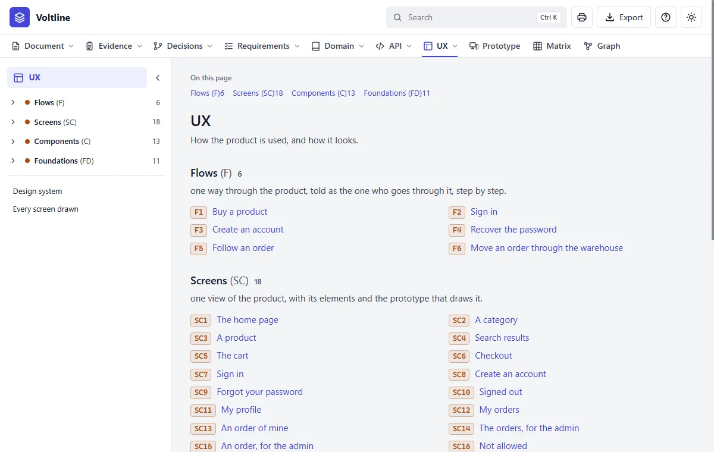
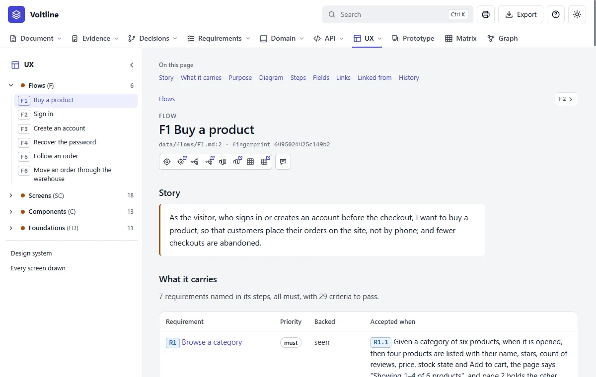
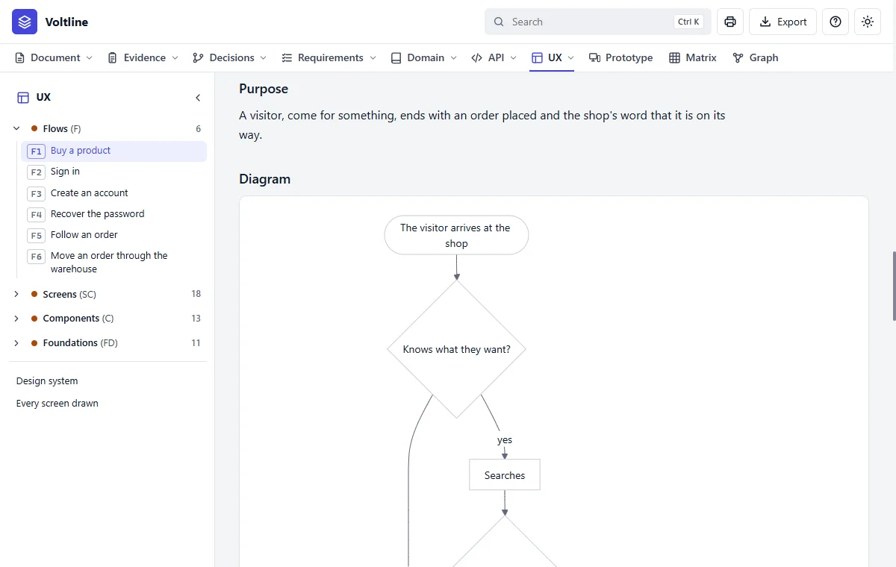
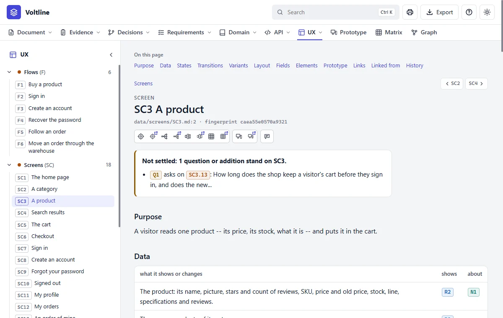
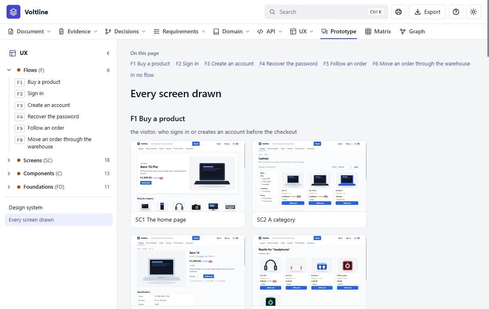
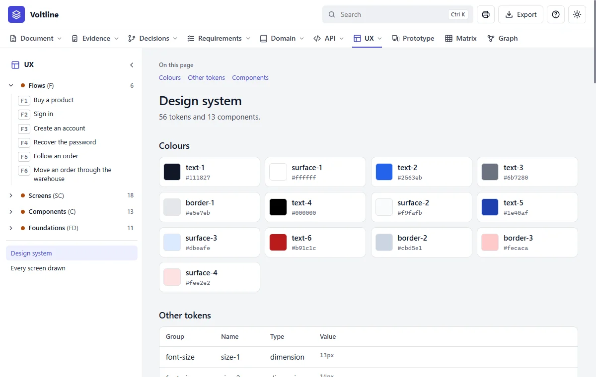

UX
In everyday termsThe walk-through. UX stands for user experience: what it's like to use the product. This module describes each journey someone takes, and each screen they meet along the way.
What it answersHow do people move through the product, and what does each screen do?
What's in it

- 1Flows, Screens, Components and Foundations.
- 2Design system and Every screen drawn. Two pages that show it all at once.
| Kind | Letter | What it is | In Voltline |
|---|---|---|---|
| Flow | F | One way through the product, told as the person who goes through it | 6 |
| Screen | SC | One view, with its elements and the prototype that draws it | 18 |
| Component | C | A part used on many screens, with its parts | 13 |
| Foundation | FD | A shared decision on how things look or behave | 11 |
A flow, part by part

- 1Story. As someone, I want something, so that it matters.
- 2What it carries. The requirements on this path, with their criteria.

A screen, part by part

- 1Not settled. Open questions about any of its rows show here too.
- 2Purpose. Why someone is on this screen.
- 3Data. What it shows or changes, tied to requirements and entities.
Lower down come States, the different conditions a screen can be in, such as empty, loading or showing an error. Then Transitions, where it can lead, Variants, Layout and the Elements table. An element is one thing on the screen, such as a button or a box, with an ID such as SC3.12.
Two more pages show the whole:


Every value of the look lives in one file, prototypes/tokens.json, under a name that says what it means: --color-brand, not a number. A foundation's table names the token, and the page shows the value beside it. A screen or a component says which foundations it follows, so a foundation reworded makes them stale like any other change; and a value changed in the tokens lists every prototype it reaches under prototypes to look at, with what moved. No sheet or prototype may write a colour of its own: check refuses it.
Read it like this
- Read a flow's Story, then follow its diagram.
- Open a screen. Read Purpose and States first: the states are what get forgotten.
- Go through Elements. Each row says what it shows, and what it stands on.
- Open the prototype to see it working.
Mistakes people make
- Looking only at the happy path. Read States: what does the screen show when it's empty, or fails?
- Trusting the picture over the row. The element's row is the fact, and the prototype is a drawing of it.